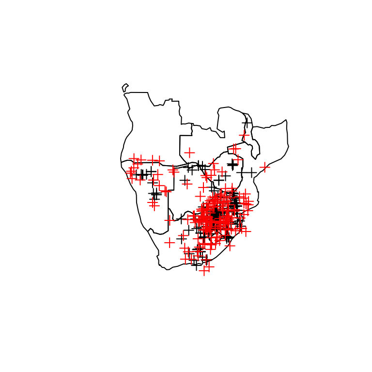
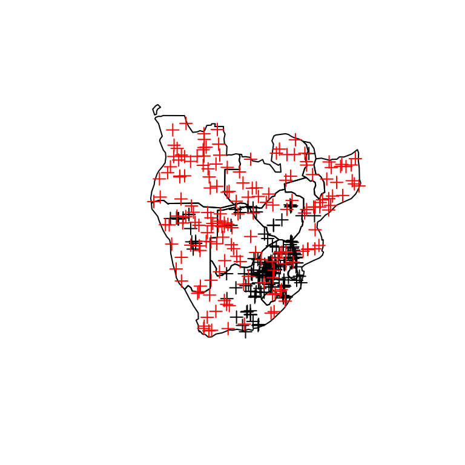

vignette1_response_data.RmddynamicSDM offers novel tools for developing species geographical distribution and abundance modelling (SDM) at high spatiotemporal resolution. Across the dynamicSDM vignettes, we demonstrate package functions on a case study species and guide users through the four key species distribution modelling stages:
Before starting this tutorial, the dynamicSDM package needs to be installed. You can install the latest version from GitHub with:
Due to the utilisation of Google Earth Engine and Google Drive across dynamicSDM functions, you must also set up a free Google account at Google. Once you have your Google log-in details, these can be used to authorise Google Earth Engine in the rgee package and Google Drive in the googledrive package.
library(rgee)
#rgee::ee_install()
rgee::ee_check()
library(googledrive)
#googledrive::drive_auth_configure()
googledrive::drive_user()As we continue through the species distribution modelling framework, functions will generate a range of outputs. To keep organised, we recommend a structured directory system. The code below will create a new project directory in your temporary folders, but you can edit the script to specify your home directory if you want to retain function outputs between R sessions.
project_directory <- file.path(file.path(tempdir(), "dynamicSDM_vignette"))
# project_directory<-"your_path_here"
dir.create(project_directory)In this four stage tutorial, we will be studying the case study species, the red-billed quelea (Quelea quelea), a nomadic bird inhabiting sub-Saharan Africa. With highly variable distributions driven by short-term weather and resource availability, dynamicSDM provides key functions to accurately model quelea’s distribution through space and time.
In this tutorial, we will be processing a sample of species occurrence records for the red-billed quelea (Quelea quelea) to generate an SDM response variable data frame. This will involve filtering records by spatiotemporal quality, extent and resolution; testing and accounting for spatiotemporal biases in records, and generating pseudo-absences through space and time.
A sample of red-billed quelea occurrence data can be loaded into your local R environment using the code below.
data("sample_occ_data")These records are formatted as exported from the Global Biodiversity Information Facility, with columns labelled “decimalLongitude” and “decimalLatitude”. For dynamicSDM functions, occurrence data must be in a specific format; containing numeric data in columns labelled “x” and “y” for the record co-ordinates longitude and latitude, and “day”, “month” and “year” for the record’s date.
convert_gbif() can be used to convert between these formats, or this can be achieved manually for data not extracted from GBIF.
sample_occ <- convert_gbif(sample_occ_data)Species occurrence records may contain anomalous or missing values in the co-ordinates or dates given. spatiotemp_check() can be used to exclude records with missing (NA) values (argument na.handle), invalid co-ordinates (coord.handle), invalid dates (date.handle) and duplicate records (duplicate.handle).
sample_occ_filtered <- spatiotemp_check(occ.data = sample_occ,
na.handle = "exclude",
date.handle = "exclude",
date.res = "day",
coord.handle = "exclude",
duplicate.handle = "exclude")
#> omitting any species records with coordinates containing NA
#> omitting any species records with dates containing NA
#> omitting any duplicate records
#> any records with invalid co-ordinates excluded
#> any records with invalid dates excluded
print(nrow(sample_occ_filtered))
#> [1] 311Additionally, users can opt to take advantage of the CoordinateCleaner package function to exclude records flagged as containing potentially anomalous co-ordinates, based on a wider variety of spatial tests than dynamicSDM alone offers.
sample_occ_filtered <- spatiotemp_check(occ.data = sample_occ,
na.handle = "exclude",
date.handle = "exclude",
date.res = "day",
coord.handle = "exclude",
duplicate.handle = "exclude",
CoordClean = T,
CoordClean.species = "quelea",
CoordClean.handle = "exclude")When generating dynamic species distribution models, it is important that occurrence records match the spatiotemporal extent of the study and any remote-sensing datasets to be utilised as explanatory variables. spatiotemporal_extent() removes any records outside of the set spatiotemporal extents.
In this case study, we want to model the subspecies Q. q. lathamii which is typically limited to southern Africa and we will incorporate remote sensing datasets available for the years 2001 to 2019. To filter records to these extents, we use a polygon of southern African countries, which can be read into your R environment and applied using the following code.
data("sample_extent_data")
sample_occ_cropped <- spatiotemp_extent(occ.data = sample_occ_filtered,
temporal.ext = c("2001-01-01", "2018-12-01"),
spatial.ext = raster::extent(sample_extent_data),
prj = "+proj=longlat +datum=WGS84 +no_defs")
#> Loading required namespace: sf
## Lets plot the change
plot(sample_extent_data$geometry)
plot(SpatialPointsDataFrame(coords = sample_occ_filtered[, c("x", "y")],
proj4string = sp::CRS("+proj=longlat +datum=WGS84 +no_defs"),
data = sample_occ_filtered), add = T)
plot(sample_extent_data$geometry)
plot(SpatialPointsDataFrame(coords = sample_occ_cropped[, c("x", "y")],
proj4string = sp::CRS("+proj=longlat +datum=WGS84 +no_defs"),
data = sample_occ_cropped), add = T)The spatial resolution of occurrence record co-ordinates and the temporal resolution of occurrence record dates are also important when generating dynamic SDMs. spatiotemp_resolution can filter records by set thresholds.
As quelea migrations are driven by highly local and short-term environmental factors, we will filter to exclude records not given to the specific day and co-ordinates to four decimal places.
sample_occ_cropped<-spatiotemp_resolution(occ.data = sample_occ_cropped,
spatial.res = 4,
temporal.res = "day")
nrow(sample_occ_cropped) # Even more records have been removed!
#> [1] 170For many reasons, the collection of species occurrence records are biased through space and time. These biases can impact SDM performance by over- or under- representing conditions at a given site or time. spatiotemp_bias() returns the results of statistical tests and plots for visual assessment of such biases.
The code below tests for bias across the entire dataset and species range.
bias_results <- spatiotemp_bias(occ.data = sample_occ_cropped,
temporal.level = c("year"),
plot = FALSE,
spatial.method = "simple",
prj = "+proj=longlat +datum=WGS84")
print(bias_results)
#> $Temporal_bias_year
#>
#> Chi-squared test for given probabilities
#>
#> data: occ.data.frequency
#> X-squared = 79.6, df = 15, p-value = 8.265e-11
#>
#>
#> $Spatial_bias
#>
#> Welch Two Sample t-test
#>
#> data: min.nndist.actual and min.nndist.random
#> t = -8.3044, df = 282.32, p-value = 4.222e-15
#> alternative hypothesis: true difference in means is not equal to 0
#> 95 percent confidence interval:
#> -69110.22 -42625.28
#> sample estimates:
#> mean of x mean of y
#> 38757.03 94624.79Whereas, this code will test for bias across only the core of the species range.
bias_results <- spatiotemp_bias(occ.data = sample_occ_cropped,
temporal.level = c("year"),
plot = FALSE,
spatial.method = "core",
prj = "+proj=longlat +datum=WGS84")
print(bias_results)
#> $Temporal_bias_year
#>
#> Chi-squared test for given probabilities
#>
#> data: occ.data.frequency
#> X-squared = 79.6, df = 15, p-value = 8.265e-11
#>
#>
#> $Spatial_bias
#>
#> Welch Two Sample t-test
#>
#> data: min.nndist.actual and min.nndist.random
#> t = -4.3264, df = 193.5, p-value = 2.427e-05
#> alternative hypothesis: true difference in means is not equal to 0
#> 95 percent confidence interval:
#> -24970.343 -9332.462
#> sample estimates:
#> mean of x mean of y
#> 26085.18 43236.59Both approaches can generate important results. The latter may be a more reliable indicator if the species range is expanding or shifting in response to global change. This is because records at the range periphery that have been collected randomly may still not be evenly distributed through space and time due to underlying ecological processes. Therefore, focusing on species core may be more representative.
One approach to correct spatiotemporal sampling biases are to “thin” records, which involves excluding records that have been collected too closely in space or time. spatiotemp_thin() allows users to specify the spatial and temporal distance to thin records by. An important argument of spatiotemp_thin() is spatial.split.degrees which specifies the size of grid cells to split occurrence records into before temporal thinning. This prevents spatially distant but temporally close records from being filtered out.
occ_thin <- spatiotemp_thin(occ.data = sample_occ_cropped,
temporal.method = "day",
temporal.dist = 30,
spatial.split.degrees = 3,
spatial.dist = 30000,
iterations = 5)
# Plot the difference in spatial distribution after thinning
# Non-thinned
plot(sample_extent_data$geometry)
sp::plot(sp::SpatialPointsDataFrame(coords = sample_occ_cropped[, c("x", "y")],
proj4string = sp::CRS("+proj=longlat +datum=WGS84 +no_defs"),
data = sample_occ_cropped), add = T)
# Thinned
plot(sample_extent_data$geometry)
sp::plot(sp::SpatialPointsDataFrame(coords = occ_thin[, c("x", "y")],
proj4string = sp::CRS("+proj=longlat +datum=WGS84 +no_defs"),
data = occ_thin), add = T)Another approach to account for spatiotemporal sampling biases is to weight records by sampling effort when fitting SDMs. This results in the down weighing of the importance of records from over-sampled regions and vice versa. Here, we will read in a sample of e-Bird avian sampling records in southern Africa to use as a sampling effort proxy, and sum these across a spatial and temporal buffer from each occurrence record using spatiotemp_weights().
data("sample_events_data")
sample_occ_cropped <- spatiotemp_weights(occ.data = sample_occ_cropped,
samp.events = sample_events_data,
spatial.dist = 100000,
temporal.dist = 30,
prj = "+proj=longlat +datum=WGS84")
#> Records completed: 100Often the paucity of species absence records necessitates the generation of pseudo-absences, which are inferred absences based upon presence records. When modelling a species distribution at high spatiotemporal resolution, it may be best to generate pseudo-absences within close spatial and temporal buffers of species occurrence. This is because model presence-absence comparisons are made at fine scales, instead of coarsely between biomes and seasons. Using spatiotemp_pseudoabs() you can specify the spatial and temporal buffer size or extents to randomly generate pseudo-absences within.
# Pseudo-absences generated within spatial and temporal buffer
pseudo_abs_buff <- spatiotemp_pseudoabs(occ.data = sample_occ_cropped,
spatial.method = "buffer",
temporal.method = "buffer",
spatial.buffer = c(250000, 500000),
temporal.buffer = c(42, 84),
n.pseudoabs = nrow(sample_occ_cropped))
# Pseudo-absences generated randomly across given spatial and temporal extent
pseudo_abs_rand <- spatiotemp_pseudoabs(occ.data = sample_occ_cropped,
spatial.method = "random",
temporal.method = "random",
spatial.ext = sample_extent_data,
temporal.ext = c("2002-01-01", "2019-12-01"),
n.pseudoabs = nrow(sample_occ_cropped))
# Plot the spatial distribution of pseudo-absences (red) compared to occurrence records for:
# Buffered
plot(sample_extent_data$geometry)
sp::plot(sp::SpatialPointsDataFrame(coords = sample_occ_cropped[, c("x", "y")],
proj4string = sp::CRS("+proj=longlat +datum=WGS84 +no_defs"),
data = sample_occ_cropped), col = "black",add = T)
sp::plot(sp::SpatialPointsDataFrame(coords = pseudo_abs_buff[, c("x", "y")],
proj4string = sp::CRS("+proj=longlat +datum=WGS84 +no_defs"),
data = pseudo_abs_buff), col = "red",add = T)
# Random
plot(sample_extent_data$geometry)
sp::plot(sp::SpatialPointsDataFrame(coords = sample_occ_cropped[, c("x", "y")],
proj4string = sp::CRS("+proj=longlat +datum=WGS84 +no_defs"),
data = sample_occ_cropped), col = "black",add = T)
sp::plot(sp::SpatialPointsDataFrame(coords = pseudo_abs_rand[, c("x", "y")],
proj4string = sp::CRS("+proj=longlat +datum=WGS84 +no_defs"),
data = pseudo_abs_rand), col = "red",add = T)
Then, the generated pseudo-absences need to be added to the occurrence record data frame by adding relevant columns and binding the rows together.
pseudo_abs_buff$decimalLatitude <- pseudo_abs_buff$y
pseudo_abs_buff$decimalLongitude <- pseudo_abs_buff$x
pseudo_abs_buff$occurrenceStatus <- rep("absent", nrow(pseudo_abs_buff))
pseudo_abs_buff$source <- rep("dynamicSDM", nrow(pseudo_abs_buff))
pseudo_abs_buff<-spatiotemp_weights(occ.data = pseudo_abs_buff,
samp.events = sample_events_data,
spatial.dist = 100000,
temporal.dist = 30,
prj = "+proj=longlat +datum=WGS84")
complete.dataset <- as.data.frame(rbind(sample_occ_cropped, pseudo_abs_buff))